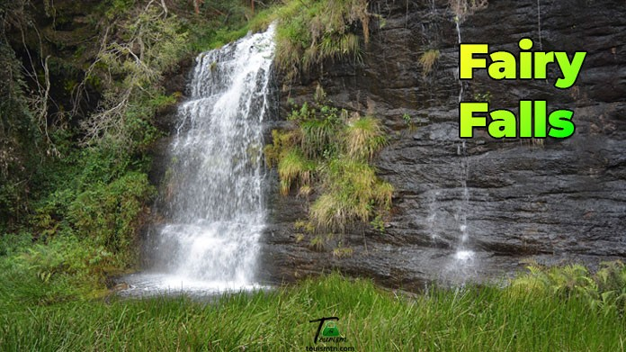

Fairy Falls in Kodaikanal is a charming, small, seasonal waterfall fed by a reservoir, offering a serene escape with its lush, green surroundings, winding trails through plantations, and a natural pool at its base. It is located about 5 km from Kodai Lake and is a great spot for a quiet walk, especially after the monsoon season when water levels are best.

Key Features:
- Location: Situated in the Pambarpuram region, approximately 5 km from Kodai Lake, near the Apple Research Station.
- Source: The waterfall is a result of water overflowing from a reservoir.
- Environment: Surrounded by lush green meadows, fern plantations, and dense forests.
- Water Features: Features a natural plunge pool at the base, formed by the cascading water.
- Accessibility: Accessible via winding trails through tea gardens.